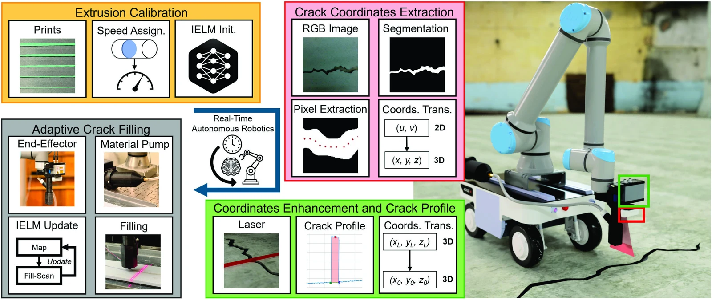
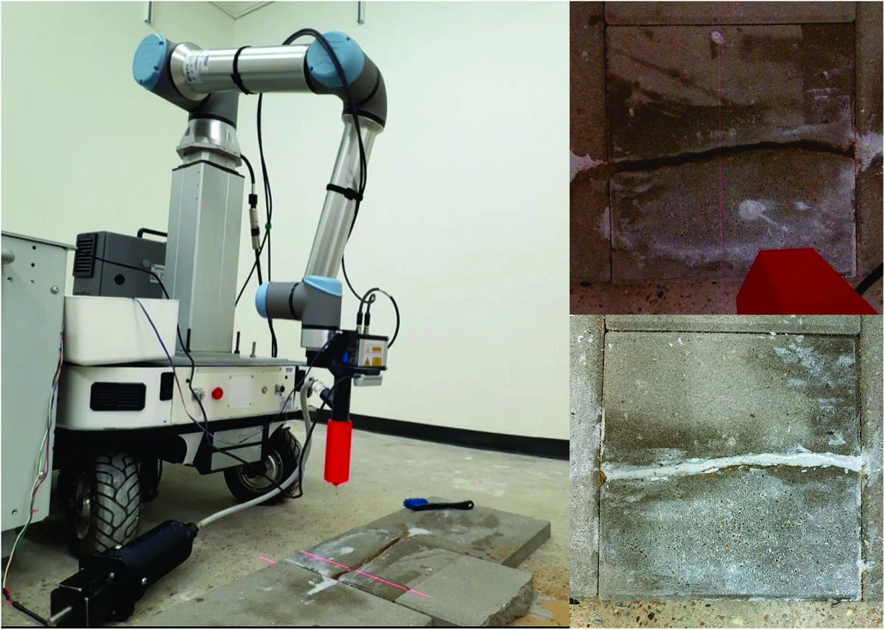

University of Houston
Real-Time Vision-Based Adaptive Robotics for Autonomous Crack Repair in Civil Infrastructure
1Electrical and Computer Engineering 2Civil and Environmental Engineering
University of Houston
Journal of Computing in Civil Engineering · Publication pending
A robot that sees the crack, measures the fill, and adapts its deposition as it moves.
One-minute demonstration · Actual robot footage with on-screen explanations · Silent video. Read the transcript.
Video transcript
Joshua Genova and Vedhus Hoskere present a robotic crack-repair system at the University of Houston. The robot scans the crack geometry, then fills the crack using laser feedback to update its deposition model and travel speed. The concrete-paver target recess is 3.175 mm, with reported recess-error MAE of 0.68 mm. In separate 3D-printed crack experiments, mean depth-error MAEs across six trials are 2.54 mm for PI, 2.25 mm for IMC, 2.27 mm for static calibration, and 0.88 mm for IELM. The IELM trial range is 0.49–1.23 mm. Cracks were precleaned and mobile positioning was manual.
IELM fill-error MAE
Six standardized trials · Table 6
IELM depth-error MAE
Six standardized trials · Table 7
Recess-error MAE
Concrete-paver testbed · Table 8
The paper
Abstract
Manual crack repair in civil infrastructure is labor-intensive, inconsistent, and difficult to adapt to varying crack geometry and material behavior during execution. Existing robotic systems improve repeatability but often rely on open-loop operation or fixed calibration, limiting their ability to respond to delayed geometric feedback and process drift during continuous repair. This paper presents a closed-loop robotic framework for autonomous crack filling that integrates hierarchical multimodal sensing for repair-accurate crack localization, lag-aware synchronization of delayed laser measurements with prior deposition commands, and an incremental extreme learning machine (IELM) for online adaptation of the deposition model. Using synchronized in-process geometric measurements, the proposed system updates the speed–area relationship online to compensate for changing crack geometry and sealant rheology during motion. Experimental validation on standardized specimens and textured concrete pavers shows that the method reduces fill-error mean absolute error (MAE) to 9.36%–15.11%, outperforming static calibration and classical feedback baselines, while also achieving standards-compliant recessed filling on realistic pavement surfaces. The results demonstrate that lag-aware feedback and real-time model adaptation can enable robust autonomous crack repair under realistic operating variability.
01 / System overview
From visual detection to measured repair
RGB-D perception finds the crack. Laser profiling refines its geometry. A learned deposition model selects robot speed, then updates using measurements of the material actually deposited.


- 01DetectRGB-D image and crack segmentation
- 02RefineLaser path and cross-sectional profile
- 03DepositSpeed selected from the inverse model
- 04Measure & adaptLag-aligned feedback and IELM update
Further details on sensing, control, and implementation are available in the paper on ResearchGate.
02 / Experimental results
More consistent filling across both crack patterns
Two repeatable 3D-printed crack patterns, three trials each, and four control strategies. IELM achieved the lowest fill-error and depth-error MAE in every reported trial. The target for these experiments was flush filling at 0 mm depth.
Fill-error MAE (%)
Mean of six trial MAEs · Lower is better
Calculated from Table 6. Unweighted means of trial MAEs, rather than pooled waypoint errors. See Tables 6 and 7 in the paper for full trial results.
03 / Concrete-paver testbed
A recessed finish on a textured surface
A separate laboratory test used concrete pavers and a target recess of 3.175 mm below the surface. The paper reports 0.6845 mm recess-error MAE across 19 measured waypoints.


Measured geometry
- Target recess
- 3.175 mm
- Measured final recesses
- 2.20–4.51 mm
- Recess-error MAE
- 0.6845 mm
- Sampled waypoints
- 19
Table 8 and accompanying text. All 19 measured recesses lie within the 1.5875–4.7625 mm interval cited in the paper from FAA AC 150/5370-10H, Item P-605. This result evaluates sampled fill geometry.
Citation
@article{genova2026crackrepair,
title = {Real-Time Vision-Based Adaptive Robotics for
Autonomous Crack Repair in Civil Infrastructure},
author = {Genova, Joshua and Hoskere, Vedhus},
journal = {Journal of Computing in Civil Engineering},
year = {2026},
doi = {10.1061/JCCEE5.CPENG-7737},
url = {https://www.researchgate.net/publication/417766419_Real-Time_Vision-Based_Adaptive_Robotics_for_Autonomous_Crack_Repair_in_Civil_Infrastructure},
note = {Publication pending}
}